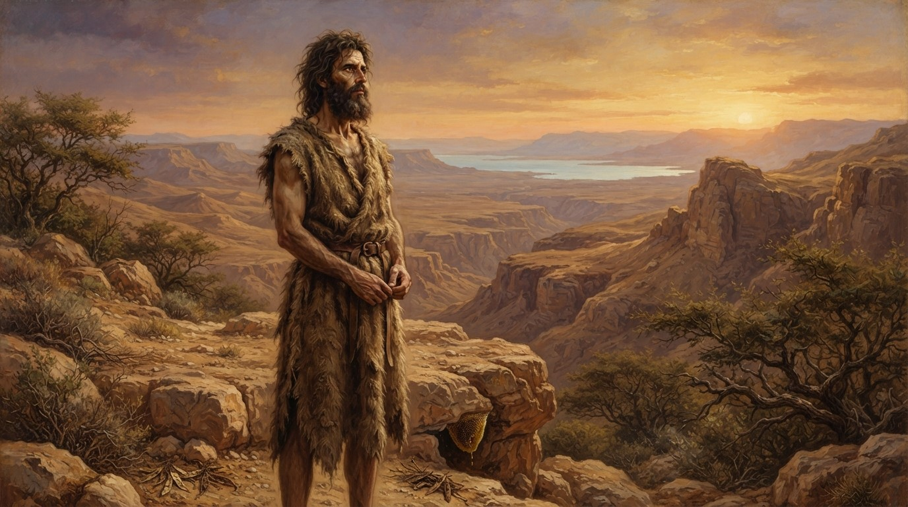
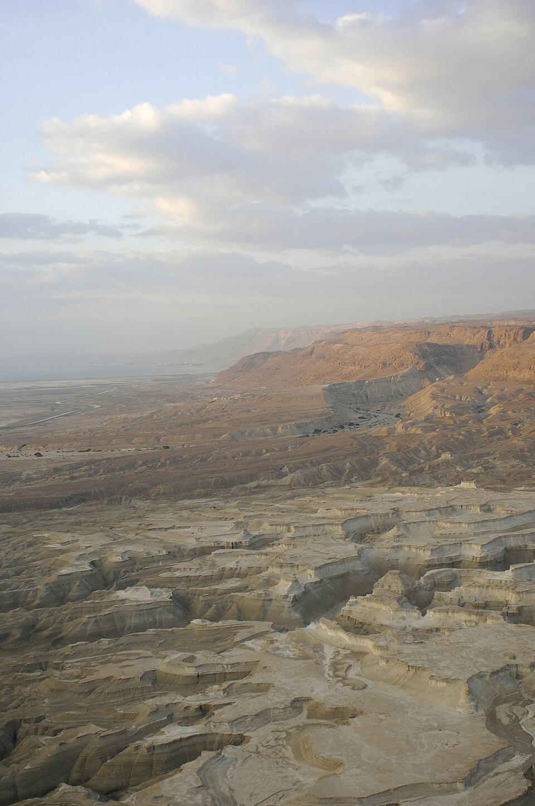

1. 地理上的曠野
指的是猶太曠野（Judean Desert），從耶路撒冷以東延伸至約旦河谷、死海沿岸的荒涼地帶。那裡氣候乾旱、岩石裸露、人煙稀少，是牧羊人和被社會邊緣化的人才會停留的地方。

2. 神學上的曠野——這才是關鍵
在聖經中，「曠野」從來不只是地理名詞，而是一個充滿神學記憶的場所：
「顯明」的希臘文是 ἀναδείξεως（anadeixeōs），含有公開指定、正式展示、舉薦的意思。這不是一個偶然的亮相，而是一個帶著神聖權柄的公開就職典禮。
1. 從隱藏到公開的時刻
約翰在曠野生活了近三十年，無人知曉。直到「該撒提庇留在位第十五年……撒迦利亞的兒子約翰在曠野裡，神的話臨到他」（路3:1-2）。那是上帝親自啟動的時刻——神的話臨到，他才從隱藏中出來。
2. 被上帝親自「舉薦」給以色列人
約翰沒有自我推薦，也不是被宗教領袖按立。他的顯明，是上帝親自在歷史舞台上把他推出來。當他開始在約旦河一帶宣講悔改的洗禮時，耶路撒冷、猶太全地、約旦河一帶的人都出去到他那裡（太3:5），這是上帝吸引眾人來見證這位先知的登場。
3. 作為「新郎的朋友」站出來
施洗約翰的顯明，不是為了彰顯自己，而是為了指出另一位。他說：「祂必興旺，我必衰微。」（約3:30）他顯明的最高峰，是當他看見耶穌走來，便大聲宣告：「看哪，神的羔羊，除去世人罪孽的！」（約1:29）那一刻，他的使命達到了頂點——他顯明了，不是為了自己，而是為了顯明基督。